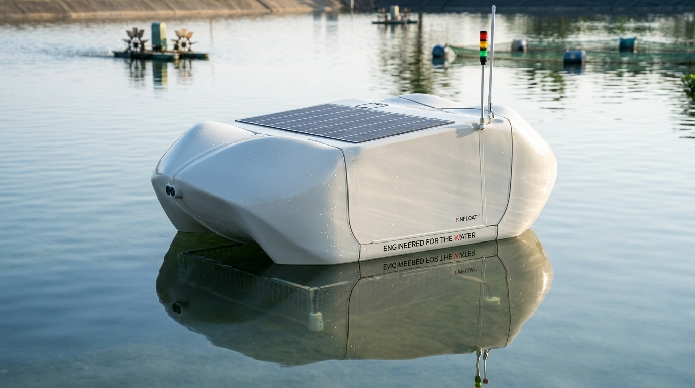
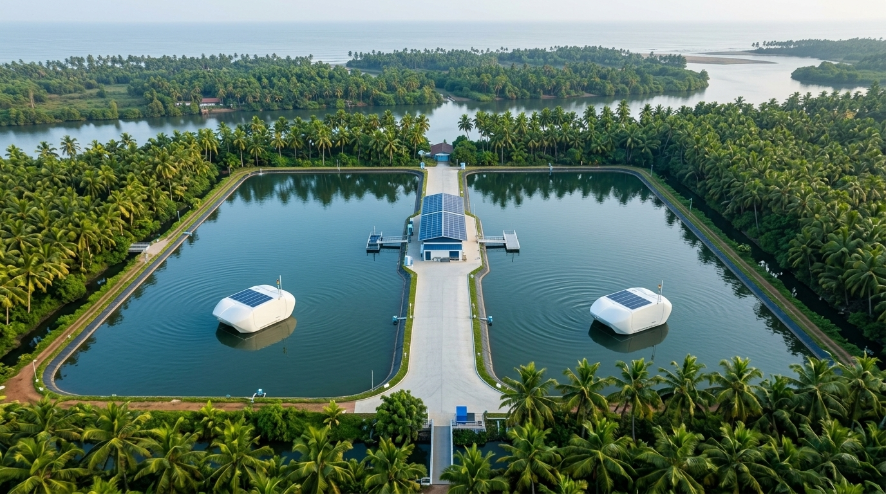

Engineering Intelligence for Modern Aquaculture
Based in Alappuzha, Kerala, Zynaq.Aqua Pvt. Ltd. converges autonomous robotics, precision IoT sensors, edge computing, and artificial intelligence into a cohesive smart ecosystem that maximizes farm productivity and eliminates manual guesswork. Engineered in Alappuzha, Kerala: Autonomous robotics, precision IoT sensors, and AI intelligence built to maximize aquaculture yields.
Empowering Fish Farmers Through Practical Innovation
Welcome to Zynaq.Aqua Pvt. Ltd., an engineering and technology company based in Alappuzha, Kerala, dedicated to developing practical, innovative solutions for the aquaculture sector.
Operating under the vision of “Engineering Intelligence,” we integrate advanced engineering, automation, electronics, sensing, and intelligent technologies to address real-world challenges faced by fish farmers.
Our ultimate goal is to build a cohesive, smart aquaculture ecosystem where hardware, automation, sensors, artificial intelligence, data analytics, and software converge to maximize efficiency, reduce mortality, and elevate farmer profitability.
FinFloat: The Foundational Anchor
Rather than offering a standalone automated feeding machine, we designed a fully connected intelligent system that serves as the bedrock of modern data-driven pond management.

Real-Time Pond Environmental Monitoring
FinFloat's multi-parameter submerged sensor array continuously samples water chemistry at critical pond depths, shielding fish stocks from lethal oxygen depletion and temperature shocks.
Optical luminescence probe accurate to 0.05 mg/L.
Submerged continuous thermistor telemetry.
Guards alkalinity balance and algae bloom indicators.
Automated SMS and app alerts when thresholds drop.
Automating Routine Farm Operations
Feed represents up to 60-70% of total aquaculture operating costs. FinFloat replaces inconsistent, physically grueling manual feeding with intelligent, adaptive micro-dosing.
Eliminates pellet crowding and aggressive competition.
Engineered for high humidity & tropical conditions.
Monocrystalline solar crown with 72h battery buffer.
Eliminates manual hauling and boat journeys across ponds.
Smarter, Data-Driven Farm Decisions
Every feeding event and environmental shift is logged to build a digital twin of your farm, enabling machine learning algorithms to optimize Feed Conversion Ratio (FCR).
Prevents uneaten feed from decaying into toxic ammonia.
Aligns feed release with natural dissolved oxygen peaks.
Compare seasonal growth velocity across multiple ponds.
Complete control and telemetry on any smartphone.
FinFloat™ Interactive 3D Studio
Directly from our Alappuzha engineering workshop: inspect the production-grade CAD geometry of the FinFloat autonomous robotic buoy. Switch seamlessly between silky 360° studio turntable playback and real-time interactive 3D WebGL orbit controls.
Physical Design Specifications
Every contour of the FinFloat housing was custom engineered for hydrodynamic balance, anti-corrosion marine endurance, and solar autonomy.
Hydrodynamic Twin-Pontoon Chassis
1350 × 650 mmCatamaran geometry (1350 mm in length × 650 mm in width) ensures zero rollover in surface chop and high-velocity aerator currents. Inscribed with “Engineered for the Water” and “Powered by Precision”.
Bow AI Optical & Acoustic Vision
AI EdgeDual recessed bow apertures house high-resolution cameras and hydrophones that continuously score biomass surface appetite to eliminate unconsumed feed waste.
High-Gain Telemetry & Strobe Tower
LoRa + 4G LTEDual-redundant long-range antennas communicate up to 5 km to the farm master station, paired with an emergency color-coded status beacon for night navigation.
Integrated Solar & Passive Cooling Deck
72-Hr BatteryUpper deck integrates weatherproof photovoltaic cells with micro-louvered convection heat vents, keeping internal battery and motor controllers cool in Kerala's tropical sun.
High-Torque Centrifugal Micro-Dispenser
15m RadiusAnti-jam vibratory feed throat dispenses pellets uniformly across a 15-meter diameter, eliminating schooling stress and biomass variation.
Inquire with our engineering team for on-site pilot trials or technical hardware datasheets.
The Smart Aquaculture Ecosystem
FinFloat is just the beginning. We are uniting hardware, automation, sensors, artificial intelligence, data analytics, and cloud software to create an autonomous farming ecosystem.
Sensors & Hardware
FinFloat deployed directly on the pond water surface. Submerged optical probes continuously sample Dissolved Oxygen, Temperature, pH, and Salinity.
Edge Telemetry
Onboard microcontrollers process sensor signals at the edge and securely stream live data packets over LoRaWAN or 4G LTE to the farm cloud repository.
AI & Analytics
Intelligent algorithms analyze feeding behavior, diurnal oxygen curves, and ambient conditions to formulate the exact micro-feeding schedule needed.
Autonomous Action
FinFloat dispenses precision rations automatically while farmers monitor pond health, aeration status, and biomass gains from anywhere via mobile app.
Scalable for Smallholders and Commercial Estates Alike
Engineered around precisely balanced twin-pond commercial modules. A centralized operations and resource shed bridges two large-scale aquaculture ponds, each monitored and aerated autonomously by its dedicated FinFloat™ edge buoy. Precision twin commercial ponds with dedicated FinFloat™ edge buoys and a symmetrical central operations hub.

Positioned symmetrically between both large ponds. Houses edge compute gateway, solar microgrid battery bank, and centralized automated feed replenishment.
Large Commercial Pond 01
Dedicated FinFloat™ buoy provides continuous real-time optical DO profiling and autonomous micro-pellet dispersal tailored to biomass density.
Central Resource & Operations Shed
Equidistant placement between twin ponds halves maintenance transit times, consolidates solar power reserves, and centralizes edge IoT mesh telemetry.
Large Commercial Pond 02
Synchronized FinFloat™ unit operates in lockstep with the farm intelligence model, eliminating feed spikes and preventing pond-to-pond oxygen crashes.
Live Farm Telemetry & Control Console
Experience how Zynaq.Aqua software presents live pond parameters, provides AI-driven feeding advice, and executes precision robotic feeding.
Calculate Your Farm ROI With Zynaq.Aqua
See how much your aquaculture operation will save each year by eliminating overfeeding, reducing mortality risks, and automating physical pond labor.
* Calculations based on field data across tropical fish and shrimp ponds with an average 18.5% feed wastage reduction, labor reduction of 24 hrs/month per pond, and FCR optimization.
Our Vision & Mission
Building the next frontier of sustainable and technologically empowered aquaculture from the coastal waterways of Kerala.
“To build a smarter and more sustainable aquaculture ecosystem through intelligent engineering, automation, and technology—making fish farming more efficient, connected, and future-ready.”
We envision a future where fish and shrimp producers are liberated from manual toil and uncertainty, relying on intelligent autonomous systems that safeguard water health, maximize yields, and protect delicate aquatic ecosystems.
“To develop practical and innovative aquaculture solutions that reduce manual effort, improve farm management, and support better decision-making through automation, AI, sensing, and robotics.”
Starting with FinFloat, we are building an integrated ecosystem where smart hardware, autonomous systems, data, and software work together to solve real-world challenges faced by farmers on a daily basis.
Born in the Heart of Alappuzha's Water Ecosystem
Alappuzha is globally renowned for its intricate backwaters, coastal lagoons, and centuries of fish and shrimp farming tradition. Zynaq.Aqua Pvt. Ltd. was founded here with deep grassroots empathy for the challenges local farmers endure every morning and night.
Alappuzha, Kerala, India
Amanath Manzil, Punnapra P.O., 688004
Indigenous Engineering Excellence
Connect With Zynaq.Aqua
Whether you are a commercial fish farmer seeking a FinFloat demo, an institutional partner, or an aquaculture researcher, we welcome your inquiries.
Corporate Office
Amanath Manzil, Punnapra P.O.
Alappuzha, Kerala – 688004, India
Schedule a FinFloat Demonstration
Fill out the form below to speak with our engineering team in Alappuzha.